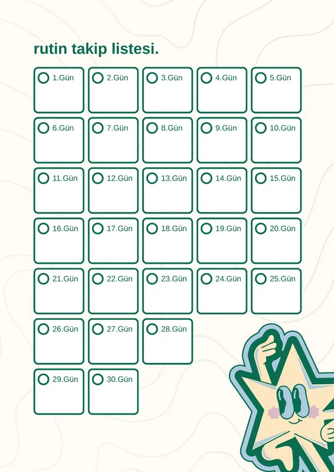

Daha iyi odak
Bildirim ve ekran süresi kontrol edilince dikkat toparlanır.
Telefon, tablet, bilgisayar ve oyunlar hayatı kolaylaştırır. Ama kontrol kaybolursa odak, uyku, ders başarısı ve sosyal hayat zarar görebilir. Önemli olan teknolojiyi bırakmak değil, onu doğru kullanmaktır.
Bildirim ve ekran süresi kontrol edilince dikkat toparlanır.
Gece ekranı azaltmak uyku kalitesini yükseltir.
Gerçek iletişim ve açık hava aktiviteleri artar.

Günlük ekran süresinin seni nasıl etkilediğini anlamaya çalış.
Bildirimleri, oyun ve sosyal medya süresini sınırla.
Spor, kitap, sohbet ve açık hava aktivitelerine yer aç.
Teknoloji kullanımı arttıkça bazı alışkanlıklar fark edilmeden büyüyebilir. Aşağıdaki işaretler sık görülüyorsa dikkat etmek gerekir.
Telefonu sebepsiz yere tekrar tekrar eline alma ihtiyacı hissedebilirsin.
Ekrandan uzak kalınca huzursuzluk veya sıkılma daha fazla olabilir.
Gece geç saate kadar ekran kullanımı uyku düzenini olumsuz etkiler.
Sık bildirimler ve ekran alışkanlığı odaklanmayı zorlaştırabilir.
Gerçek sohbetler yerine sürekli dijital ortamda kalmak yalnızlaştırabilir.
Sadece birkaç dakika diye başlayıp saatler geçirmek sık yaşanır.

Uzun süre ekran başında olmak odak süresini azaltabilir.
Boyun ağrısı, göz yorgunluğu ve hareketsizlik görülebilir.
Özellikle gece kullanımı uykuya geçmeyi zorlaştırabilir.
Aile, arkadaşlık ve günlük sorumluluklar geri planda kalabilir.
Küçük ama düzenli adımlar, ekranla olan ilişkiyi çok daha sağlıklı hale getirir.
Telefon ve tablet için günlük süre belirlemek kontrol kazandırır.
Yatmadan en az 1 saat önce telefonu bırakmak daha iyi uyku sağlar.
Gereksiz bildirimleri kapatmak dikkat dağınıklığını düşürür.
Spor, kitap, yürüyüş ve hobi çalışmaları boş zamanı doldurur.
Sürekli el altında olması kontrol etmeyi daha da artırır.
Aile ve arkadaşlarla gerçek iletişim dijital bağı azaltır.
Teknolojiyi tamamen bırakmak yerine, onu doğru zamana yerleştirmek daha gerçekçi ve etkilidir.
Kısa egzersiz, kahvaltı ve hazırlanma.
Önce gerekli işleri tamamla, sonra eğlenceye geç.
Bedeni hareket ettirmek zihni de rahatlatır.
Geceye doğru daha sakin etkinliklere geç.

Hayır. Amaç tamamen bırakmak değil, doğru ve dengeli kullanmaktır.
Uyku, odak, sosyal ilişki ve zaman kontrolünün bozulması en sık görülen sorunlardandır.
Günlük ekran süresi sınırı koymak ve gereksiz bildirimleri kapatmak iyi bir başlangıçtır.
Evet. Ortak kurallar koymak ve birlikte zaman geçirmek süreci kolaylaştırır.
Ekran seni yönetmesin. Küçük alışkanlıklar değişince büyük fark oluşur.